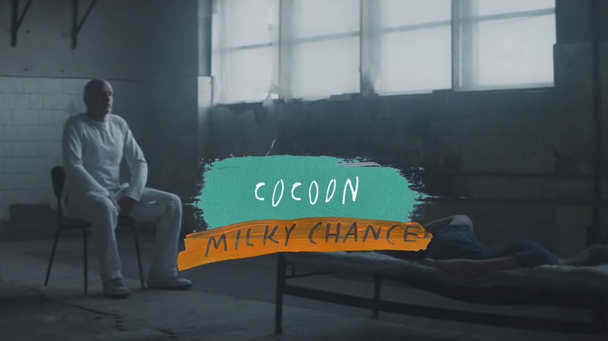

CANCIONES FAMOSAS DE MILKY CHANCE
| NOMBRE | DESCRIPCIÓN | IMAGEN |
|---|
| STOLEN DANCE |
Esta canción siendo la mas famosa de la banda hace referencia a un drogadicto que hecha en dalta su dosis, bueno, esto sobre el papel, pero en realidad habla sobre los males de amores, en si de la perdida. https://musicandrock.com/canciones/significado-stolen-dance-milky-chance/#:~:text=Music%20and%20Rock-,%C2%BFDe%20qu%C3%A9%20va%20Stolen%20Dance%3F,De%20la%20p%C3%A9rdida. |
|
| DOWN BY THE RIVER |
Fue el segundo sencillo lanzado en el álbum Sadnesential por esta banda, esta canción escrita por el propio dúo llegando a ser la segunda mas escuchada de ellos, esta canción también aparece en el videojuego FIFA 15 por EA Sports. https://en.wikipedia.org/wiki/Down_by_the_River_(Milky_Chance_song) |
|
| FLASHED JUNK MIND |
Flashed Junk Mind fue el último sencillo del álbum "Sadnecessary", fue lanzada acompañada de letra en Agosto del 2014, 20 días depués se lanzo su video musical. https://en.wikipedia.org/wiki/Flashed_Junk_Mind |
|
| COCOON |
Después de tres largos años, Milky Chance retoma con está canción, con una combinación de ritmos muy personal y bastante reconocible. La canción habla sobre el egoismo y la codia del ser humano, como una mujer se autodestruye sentimentalmente y que no siempre es bueno volevr al pasado. https://loff.it/the-music/tras-un-largo-periodo-de-reflexion-y-reencuentro-regresa-milky-chance-262094/ |
 |